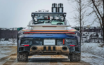

Porsche 911 Dakar
O Porsche 911 Dakar é a versão mais aventureira do icônico 911, trazendo características únicas para quem busca desempenho tanto em pistas quanto em terrenos off-road.
Humilde Opinião 😊🤗
"12 segundos para alcançar 200 km/h, partindo de uma parada total
Potência e precisão que você espera de um tração traseira dos sonhos.
O Porsche 911 Dakar não é apenas um carro; é uma máquina que transforma a aceleração em uma experiência pura de adrenalina. Cada segundo conta, cada curva é uma promessa de pura emoção. Um desempenho que não apenas impressiona, mas redefine o conceito de velocidade e controle.
😌 "
Galeria de Imagens
Especificações Técnicas
- Motor: 3.0L Biturbo, 6 cilindros
- Potência: 480 cv
- Tração: Integral
- 0-100 km/h: 3,4 segundos
- Suspensão: Adaptativa com modos off-road
Características e Inovações
O Porsche 911 Dakar combina potência e inovação para oferecer uma experiência única, tanto em estradas pavimentadas quanto em terrenos desafiadores. Seu design robusto e a suspensão adaptativa garantem estabilidade e desempenho excepcionais.
- Rodas de 19 polegadas com pneus específicos para off-road.
- Modos de condução personalizados para diferentes terrenos.
- Design aerodinâmico para máximo desempenho em qualquer ambiente.